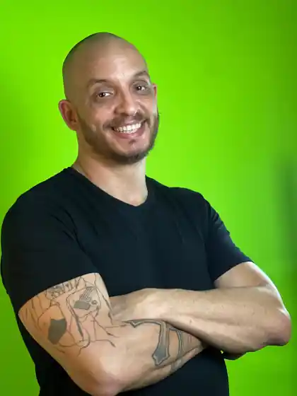
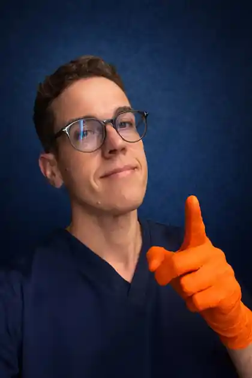

CT-MED Academy
Gil Kléber
Anestesiologista e professor. Responsável pelo conteúdo clínico, estrutura pedagógica e condução da live.
Conteúdo clínico · Produto · Pedagogia

Da decisão de intubar ao plano B quando a primeira tentativa falha. Uma live construída em cima de casos, escolhas e consequências — como o plantão exige.
Na hora do plantão, o problema não é lembrar uma tabela. É decidir se o paciente precisa ser intubado, se ele tolera a indução, como você vai pré-oxigenar e o que fará se a primeira tentativa falhar. É aí que conhecimento vira conduta.
A lógica da CT-MED é simples: caso → decisão → consequência → raciocínio → nova decisão. O conteúdo entra exatamente onde a decisão clínica exige.
Indicação, prioridade e o erro de confundir “precisa de via aérea” com “posso empurrar as drogas agora”.
Hipoxemia, choque, acidose e reserva fisiológica: o risco não começa na laringoscopia.
Indutor, bloqueador, dose e contexto. O paciente muda a escolha — não a tabela.
Reoxigenação, otimização, bougie, videolaringoscopia, supraglótico e hora de parar de insistir.
Capnografia, sedoanalgesia, hipotensão pós-IOT e ventilação inicial.
A proposta é simples: conteúdo clínico direto ao ponto, experiência de aula organizada e nenhum ruído entre inscrição, transmissão e material de apoio.
Anestesiologista e professor. Responsável pelo conteúdo clínico, estrutura pedagógica e condução da live.

Responsável pela operação, organização comercial e experiência da turma do primeiro contato à entrega.
Não é um pacote de “bônus”. São ferramentas de consulta rápida pensadas para acompanhar o raciocínio da live e continuar úteis depois dela.
Decisões clínicas em tempo real, discussão e raciocínio aplicado.
Volte aos pontos críticos e reveja o raciocínio depois da transmissão.
O que precisa estar organizado antes de administrar indutor e bloqueador.
Decisão → preparo → indução → intubação → confirmação → resgate.
Doses usuais, contexto de escolha e contraindicações relevantes.
O que fazer quando a primeira tentativa falha sem repetir o mesmo erro.
A proposta não é formar especialista em via aérea em uma noite. É entregar uma estrutura mental melhor para o momento em que você precisar assumir a condução.
Agora precisa entender como ela se organiza quando o paciente está deteriorando na sua frente.
Menos improviso, mais prioridade e uma sequência mental que ajuda a não travar.
Use a live para revisar decisões críticas, atualizar o raciocínio e identificar lacunas.
Uma noite para transformar “eu sei a teoria” em uma sequência de decisão que você consegue usar quando o paciente está na sua frente.
Não. A live não pressupõe experiência avançada em via aérea. Ela foi desenhada para organizar o raciocínio de quem está se preparando para assumir mais responsabilidade clínica.
Sim. O replay ficará disponível por 14 dias após a transmissão.
Não. O foco é conduzir a ISR inteira: decisão, preparo, fisiologia, drogas, execução, falha da primeira tentativa, confirmação e pós-IOT.
Sim. Também é útil para médicos que já fazem plantão e querem revisar e estruturar melhor decisões críticas de via aérea.
Menos decoreba. Mais prioridade, segurança e raciocínio aplicável ao plantão.
